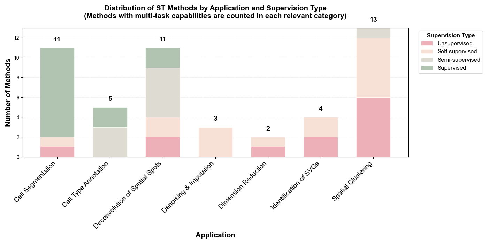
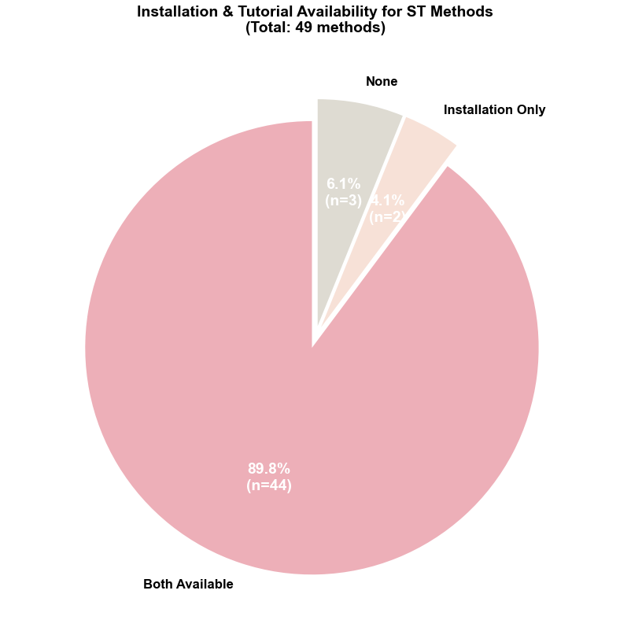

Spatial Transcriptomics (ST) Task-specific Methods
Spatial transcriptomics has emerged as a powerful technology for profiling gene expression while preserving tissue architecture. Our review identifies 49 specialized methods designed for spatial transcriptomics analysis, addressing unique challenges such as spatial clustering, cell segmentation, spatially variable gene identification, and deconvolution of spatial spots. The following statistics highlight the landscape of spatial transcriptomics methodologies.
Distribution by Learning Paradigm
Learning Paradigms: Among the 49 ST-specific methods reviewed, the field demonstrates a balanced distribution across learning paradigms. Supervised methods dominate cell segmentation tasks (18/49, 37%), while unsupervised and self-supervised approaches collectively account for 55% (27/49), particularly prevalent in spatial clustering (13 methods) and deconvolution (11 methods). Semi-supervised methods (10%, 5/49) primarily target cell type annotation and deconvolution tasks.
Installation & Tutorial Availability
Reproducibility Support: ST methods exhibit exceptional reproducibility standards—100% (49/49) provide accessible code repositories. Documentation quality is notably high: 93.9% (46/49) offer installation instructions, 89.8% (44/49) include tutorials, and 89.8% (44/49) provide both, significantly outperforming scRNA-seq methods. Only 3 methods (BLEEP, GAADE, MAFN) lack both installation and tutorial documentation, representing just 6.1% of the field, while an additional 2 methods (FOCUS Framework, Segger) provide only installation instructions without tutorials.
Table B: ST Methods
💡 How to use: Click on any method name to expand and view detailed information including Model, Features, Experimental Profile, Installation, and Tutorials. The default view shows: Method, Application, Supervision, and Code links.
| Method (Click to expand) | Application | Supervision | Code | |||||
|---|---|---|---|---|---|---|---|---|
| BLEEP | Denoising and Imputation | CLIP(ResNet) | Self-supervised | Relies solely on histological images for prediction, avoiding the curse of dimensionality and demonstrating robustness to experimental artifacts. | Input: Omics and Imaging Data scale: 9,269 spots Metrics: R2:0.217–0.173 | Link | ||
| stDCL | Denoising and Imputation | GCN(CL) | Self-supervised | Facilitates reconstruction of spatial hierarchies while strengthening layer-specific gene expression signals. | Input: Omics Data scale: 1,200–30,000 cells Metrics: PCC:0.502 | Link | Yes | Yes |
| stImpute | Denoising and Imputation | AE, GraphASGE, ESM-2 | Self-supervised | Incorporates functional relevance via ESM-2-based gene networks, enhancing interpretability beyond expression similarity. | Input: Omics and Imaging Data scale: 2,000–1.3M cells Metrics: MSE:0.45~0.48 CSS:0.66~0.74 | Link | Yes | Yes |
| SpaHDmap | Dimension Reduction | GCN, U-net, NMF | Self-supervised | Generates high-resolution embeddings that reveal fine-grained spatial structures, with multimodal processing capability and strong biological interpretability. | Input: Omics and Imaging Data scale: 167,780 cells Metrics: ARI:0.81 MAE:0.09 | Link | Yes | Yes |
| STAMP | Dimension Reduction | SGCN,Topic modeling | Unsupervised | Provides end-to-end interpretable dimension reduction with probabilistic representations, flexibly capturing cellular heterogeneity and scaling well across diverse spatial transcriptomics scenarios. | Input: Omics Data scale: 39,220–93,206 spots Metrics: cLISI:0.96 KBET:0.08 | Link | Yes | Yes |
| SPADE | Identification of SVGs | VGG-16 | Self-supervised | Through deep integration of ST data with histological images, SPADE identifies genes that are not only spatially variable but also closely associated with underlying tissue morphology. | Input: Omics and Imaging Scale: 267–3,813 spots Metrics: ARI:0.324 Classification accuracy:90.51% | Link | Yes | Yes |
| GASTON | Identification of SVGs | DNN | Self-supervised | By simulating tissue slice topography, it captures both sharp, discontinuous gene expression changes at spatial domain boundaries and smooth expression gradients within domains, enhancing the biological relevance of SVG identification. | Input: Omics Scale: 3,900–9,985 spots Metrics: Spatial coherence score:0.86 AUPRC:0.31 ARI:0.59 F-measure:0.74 | Link | Yes | Yes |
| PROST | Identification of SVGs | GAT | Unsupervised | Introduces an interpretable quantitative metric (PI) for identifying and ranking SVGs, significantly enhancing spatial domain segmentation performance of PNN and other mainstream models such as STAGATE and SpaceFlow. | Input: Omics Data scale: 19,109 spots Metrics: ARI:0.474 NMI:0.610 Moran's I:0.384–0.122 | Link | Yes | Yes |
| GAADE | Identification of SVGs | GAT | Unsupervised | identified SVGs exhibit clear spatial expression patterns, with flexible parameter settings that allow users to prioritize either spatial localization precision or detection quality based on research needs. | Input: Omics Data Scale: 2,695–4,788 spots Metrics: ARI:0.60 Moran's I:0.5428 Geary's C:0.5437 | Link | ||
| STAIG | Spatial Clustering | GNN, BYOL | Self-supervised | Utilizes image-guided pre-clustering to reduce false-negative impact, and eliminates batch effects by learning local commonalities without requiring prior spatial alignment. | Input: Omics and Imaging Data Scale: 2179–19,285 spots Metrics: ARI:0.84 NMI:0.78 SC:0.40 DB:0.87 BatchKL:0.14 ILISI:2.95 | Link | Yes | Yes |
| SpaGCN | Spatial Clustering | GCN | Unsupervised | As an early and innovative model, it successfully integrates ST data with histological images to jointly perform clustering and SVG identification. | Input: Omics and Imaging Data Scale: 224–3,353 spots Metrics: ARI:0.522 Moran's I:0.54 | Link | Yes | Yes |
| GraphST | Spatial Clustering | GNN | Self-supervised | Enhances spatial clustering and biological relevance by learning local microenvironments via contrastive learning, while integrating multi-sample alignment and deconvolution in one framework. | Input: Omics Data Scale: 72–92,928 spots Metrics: ARI:0.64 ILISI:1.846 | Link | Yes | Yes |
| STAGATE | Spatial Clustering | GATAE | Unsupervised | In low-resolution settings, a cell type–aware module enables pre-clustering to refine tissue boundary detection while simultaneously denoising and learning key spatial expression patterns. | Input: Omics Data Scale: 3,498–50,000 spots Metrics: ARI:0.60 NMI:0.65 | Link | Yes | Yes |
| ResST | Spatial Clustering | Residual graph learning | Self-supervised | Quantifies the impact of biological effects on clustering and employs domain adaptation based on Margin Disparity Discrepancy (MDD) theory with strict generalization bounds to achieve more accurate batch correction. | Input: Omics and Imaging Data Scale: 3,639–3,844 spots Metrics: ARI:0.792 SC: 0.161 DB:1.676 CH:284.062 | Link | Yes | Yes |
| DeepST | Spatial Clustering | Inception v3, VGAE, DAN | Unsupervised | Enhances morphological feature extraction using a pre-trained CNN and applies adversarial learning to effectively correct batch effects. | Input: Omics and Imaging Data Scale: 3,639–4,000 spots Metrics: ARI:0.798 SC: 0.421 DB: 1.258 | Link | Yes | Yes |
| SPACEL | Deconvolution of Spatial Spots | VAE, GCN, Adversarial learning | Semi-supervised | Provides a comprehensive ST data processing suite, including Spoint for deconvolution, Splane for spatial clustering across multiple sections, and Scube for 3D tissue reconstruction. | Input: Omics Data Scale: 3,000–4,000 spots Metrics: PCC:0.73 SSIM:0.69 RMSE:0.05 JSD:0.41 AS:0.93 | Link | Yes | Yes |
| STMSGAL | Spatial Clustering | GATE | Self-supervised | Integrates multi-level encoder features to capture comprehensive data structures, and employs a clustering-guided self-supervised module with pseudo-labels for improved robustness. | Input: Omics Data scale: 2,264–5,913 spots Metrics: ARI:0.606 DB: 1.155 CH: 1,010.724 | Link | Yes | Yes |
| MAFN | Spatial Clustering | GCN | Unsupervised | Enhances feature discriminability via the CCR strategy and adaptively fuses multi-source information through the CAM module, yielding more effective and robust representations for clustering. | Input: Omics Data Scale: 32,285–36,601 genes Metrics: ARI:0.82 NMI:0.78 | Link | ||
| STAGUE | Spatial Clustering | GCN | Unsupervised | Introduces a spatial learner to construct an additional view, enabling joint optimization of gene expression and spatial structure across three views for both spatial clustering and cell-cell communication analysis. | Input: Omics Data scale: 167–4,788 spots Metrics: ARI: 0.841 AMI: 0.820 | Link | Yes | Yes |
| conST | Spatial Clustering | GNN, MAE | Self-supervised | Employs a multi-level contrastive learning framework across data modalities and granularities, with GNNExplainer for interpretability, enhancing model credibility in biological applications. | Input: Omics and Imaging Data Scale: 971–3278 spot Metrics: ARI:0.65 SC:0.8 CHS:603 DBI:1.8 | Link | Yes | Yes |
| stMVC | Spatial Clustering | GATE, SimCLR | Semi-supervised | Constructs two independent graph views—Histological Similarity Graph (HSG) and Spatial Location Graph (SLG)—and incorporates weak supervision from biological priors (e.g., annotated tumor regions) to guide embedding learning. | Input: Omics and Imaging Data Scale: 3,460–4,789 spots Metrics: ASW:0.44 | Link | Yes | Yes |
| SiGra | Spatial Clustering | Transformer | Self-supervised | Effectively integrates image and transcriptomic features through three parallel encoder–decoder branches, achieving clustering results (measured by ARI) closer to pathologist-annotated gold standards than classical methods such as Seurat and BayesSpace. | Input: Omics and Imaging Scale: 3,431–4,221 spots Metrics: ARI:0.62 | Link | Yes | Yes |
| SpaGT | Spatial Clustering | Transformer | Unsupervised | Introduces structure-reinforced self-attention to iteratively refine graph structures, offering strong generalizability and stable performance on both high- and low-resolution ST data without relying on additional modalities. | Input: Omics and Imaging Scale: 1,848–41,786 spots Metrics: ARI:0.805 Moran's I:0.664 | Link | Yes | Yes |
| FOCUS Framework | Cell Type Annotation | GCN | Semi-supervised | introduces a novel approach based on subcellular RNA spatial distribution, achieving high annotation accuracy and strong interpretability by quantifying gene importance and revealing pathways linked to cell identity, while maintaining high performance with limited labeled data. | Input: Omics Data scale: 300,000–766,313 cells Metrics: F1:0.909 Accucary:0.948 | Link | Yes | |
| Spatial-ID | Cell Type Annotation | DNN, VGAE | Supervised | Demonstrates strong robustness to gene expression sparsity and is effectively applicable to 3D and large-field (centimeter-scale) tissue samples. | Input: Omics Data scale: 31,299–159,738 cells 83,621–280,186 cells Metrics: Accuracy:92.75% Weighted F1:0.9209 | Link | Yes | Yes |
| SPANN | Cell Type Annotation | VAE | Supervised | achieves cell-type-level alignment through optimal transport, enables robust discovery of novel cell types with an expert ensemble system, and uniquely integrates spatial information via regularization techniques. | Input: Omics Data scale: 4,382–15,413 1,549–3,166 Metrics: ACC:0.831 NMI:0.772 ARI 0.792 | Link | Yes | Yes |
| scBOL | Cell Type Annotation | GCN | Semi-supervised | Effectively addresses cross-dataset cell type identification by employing bipartite prototype alignment, with strong capability in handling batch effects and discovering novel cell types. | Input: Omics Data scale: 45,958–173,968 cells Metrics: Accuracy:95.8% | Link | Yes | Yes |
| STELLAR | Cell Type Annotation | GCN | Semi-supervised | The learned cell embeddings are applicable to both cell classification and the identification of higher-order tissue structures, such as immune follicles, that extend beyond individual cellular neighborhoods. | Input: Omics Data scale: 619,186–45,958 Metrics: Accuracy:0.93 F1:0.82 | Link | Yes | Yes |
| SpaDecon | Deconvolution of Spatial Spots | SAE | Semi-supervised | Integrates multimodal data to account for the tendency of spatially adjacent and histologically similar regions to share cell type compositions, while demonstrating high efficiency in speed and memory usage. | Input: Omics and Imaging Data scale: 74,973–100,064cells 224–3,798 spots Metrics: MSE:0.004 JSD:0.28 | Link | Yes | Yes |
| SD2 | Deconvolution of Spatial Spots | GCN, AE | Semi-supervised | Treats high dropout rates as informative patterns rather than noise, and uses them to guide feature gene selection, representing a fundamental innovation at the feature selection level. | Input: Omics Data Scale: 1,927–16,119 cells 428–3,355 spots Metrics: RMSE:0.06 JSD:0.21 R:0.57 | Link | Yes | Yes |
| STdGCN | Deconvolution of Spatial Spots | GCN | Semi-supervised | Employs a unique dual-GCN parallel architecture and introduces an optimized pseudo-ST point generation method to address the challenge of rare cell types. | Input: Omics Data scale: 93,450–1.1M cells 59–3115 spots Metrics: RMSE:0.05 JSD:0.002 | Link | Yes | Yes |
| SPADE | Deconvolution of Spatial Spots | SpaGCN | Supervised | Uses a domain-first strategy, achieving high true positive and low false positive rates in detecting correct cell types within each domain. | Input: Omics and Imaging Data scale: 47,209–22,000 cells 700–2,000 spots Metrics: mAD:0.007 RMSD:0.015 R:0.997 | Link | Yes | Yes |
| CLPLS | Deconvolution of Spatial Spots | GCN, Contrastive learning | Self-supervised | By integrating multi-omics data, CLPLS resolves spatial cell type distribution and enables exploration of spatially epigenomic heterogeneity across tissues. | Input: Omics Data scale: 4281–15,095 cells 490–53,208 spots Metrics: PCC:0.92 SSIM:0.91 RMSE:0.12 JSD:0.35 AUC:0.99 | Link | Yes | Yes |
| SpatialcoGCN | Deconvolution of Spatial Spots | VAE, GCN | Self-supervised | In addition to deconvolution, introduces SpatialcoGCN-Sim to generate simulated ST data with spatial information, closely matching real data in spatial expression correlation. | Input: Omics Data Scale: 1,040–29,519 cells 953–2,376 spots Metrics: ARS:0.96 PCC:0.88 SSIM:0.82 COSSIM:0.92 RMSE:0.09 JSD:0.49 | Link | Yes | Yes |
| LETSmix | Deconvolution of Spatial Spots | DNN, Adversarial learning | Supervised | Incorporates four types of spatial information through the innovative LETS filter and employs Mixup-enhanced domain adaptation to address platform effects and sample imbalance. | Input: Omics and Imaging Data Scale: 1,733–57,530 cells 224–10,000 spots Metrics: AUC:0.94 ER:0.78 JSD:0.04 Moran's I:0.28 | Link | Yes | Yes |
| STdeconvolve | Deconvolution of Spatial Spots | Topic modeling | Unsupervised | As an unsupervised method, STdeconvolve is not limited by predefined reference cell types and can identify unique cell types or condition-specific cell states with altered gene expression in ST samples. | Input: Omics Data scale: 260–57,397 spots Metrics: RMSE:0.05 | Link | Yes | Yes |
| STRIDE | Deconvolution of Spatial Spots | Topic modeling | Unsupervised | Learns biologically meaningful and interpretable cell type features through topic modeling, and aligns sequential tissue sections to reconstruct 3D spatial architecture. | Input: Omics Data scale: 33,043–611,034 cells 1,000–11,626 spots Metrics: PCC:0.84 RMSE:0.013 | Link | Yes | Yes |
| SMART | Deconvolution of Spatial Spots | Topic modeling | Semi-supervised | Allows incorporation of covariates (e.g., disease status, sex, treatment group) into deconvolution to quantify condition-specific changes in cell-type expression profiles, requiring only a simple marker gene list and minimal reference data. | Input: Omics Data scale: 50–2,702 spots Metrics: RMSE:0.0565 PCC:0.955 | Link | Yes | Yes |
| Cellpose | Cell Segmentation | U-net | Supervised | Pre-trained on high-quality datasets to accurately segment diverse cell types; the novel gradient flow algorithm effectively addresses challenges like uneven fluorescence labeling and signal loss in nuclear regions. | Input: Omics and Imaging Data Scale: 100–1,139 images Metrics: AP:0.93(IoU=0.5) | Link | Yes | Yes |
| Cellpose2.0 | Cell Segmentation | U-net | Supervised | Supports fine-tuning with minimal labeled data to overcome general model limitations on unseen image types; introduces a model zoo and human-in-the-loop framework for model selection and segmentation refinement. | Input: Omics and Imaging Data scale: 608–3,188 images Metric: Improved AP:0.32 | Link | Yes | Yes |
| Cellpose3 | Cell Segmentation | U-net | Supervised | Jointly trained on multiple degradation types—denoising, deblurring, and upsampling—enabling high-quality image restoration without requiring users to specify degradation type or source, thus improving inputs for downstream segmentation. | Input: Omics and Imaging Data scale: 8,402 images Metrics: Improved AP:0.7 | Link | Yes | Yes |
| BIDCell | Cell Segmentation | U-net 3+ | Self-supervised | Implements self-supervised learning to eliminate reliance on ground truth, with biologically-informed loss functions that guide optimization based on cell shape, size, and other morphological features. | Input: Omics and Imaging Data scale: 4,000 patches(40x40) Metrics: Pearson cor:0.95 | Link | Yes | Yes |
| SCS | Cell Segmentation | Transformer | Supervised | Designed for high-resolution ST data without requiring extensive manual annotation, it leverages automatically segmented nuclei from stained images as positive samples and incorporates neighboring gene expression profiles and spatial positions for training, aligning more closely with the intrinsic nature of spatial transcriptomics. | Input: Omics and Imaging Data scale: 570k–42M spots Metrics: IoU:0.75 Pearson cor:0.88 | Link | Yes | Yes |
| UCS | Cell Segmentation | CNN | Supervised | Efficient and user-friendly; the two-step strategy achieves accurate cell boundaries highly consistent with H&E staining while maintaining high transcript coverage. | Input: Omics and Imaging Scale: 107,829–165,752 cells Metrics: F1:0.84 | Link | Yes | Yes |
| Segger | Cell Segmentation | Heterogeneous GCN | Supervised | Extends nucleus-based segmentation to capture cytoplasmic signals while minimizing contamination, achieving a sensitivity–accuracy balance. | Input: Omics and Imaging Data scale: 180k cells Metrics: PMP:0.26 MECR:0.015 | Link | Yes | |
| JSTA | Cell Segmentation | EM algorithm | Supervised | Jointly optimizes cell segmentation and cell type annotation through iterative EM algorithm, enabling high-precision localization of cellular subtypes. | Input: Omics and Imaging Data scale: 83–142 cell types Metrics: Improved accuracy:45% | Link | Yes | Yes |
| CelloType | Cell Segmentation | Transformer, DINO | Supervised | Employs end-to-end multi-task learning to jointly optimize segmentation and classification, enabling accurate identification of both cells and nuclei, as well as segmentation of non-cellular structures with large size variability. | Input: Omics and Imaging Data scale: 59–28 images Metrics: AP:0.93(IoU=0.5) | Link | Yes | Yes |
| FICTURE | Cell Segmentation | LDA | Unsupervised | A segmentation-Free method, instead of defining explicit cell boundaries, it infers spatial factors directly at submicron-resolution pixel level, while remaining scalable to ultra-large datasets. | Input: Omics and Imaging Data scale: 6.8M–700M transcripts Metrics: Accuracy:0.975 | Link | Yes | Yes |
| GeneSegNet | Cell Segmentation | FCN | Supervised | Transforms discrete RNA spatial coordinates into continuous 2D probability maps, enabling effective integration with DAPI images; introduces a recursive training strategy with alternating optimization to enhance robustness and performance on noisy-labeled datasets. | Input: Omics and Imaging Data scale: 28–59 images Metrics: Image IoU:0.73 Gene IoU:0.64 | Link | Yes | Yes |
📊 Analysis Summary
- Total Methods Reviewed: 49
- Primary Applications: Spatial Clustering (13 methods, 27%), Cell Segmentation (11 methods, 22%), Deconvolution of Spatial Spots (11 methods, 22%), Cell Type Annotation (5 methods, 10%), Identification of SVGs (4 methods, 8%), Dimension Reduction (3 methods, 6%), Denoising & Imputation (3 methods, 6%)
- Supervision Distribution: Supervised (~37%, 18 methods), Self-supervised (~27%, 13 methods), Unsupervised (~29%, 14 methods), Semi-supervised (~10%, 5 methods)
- Unsupervised + Self-supervised: 27/49 (55%)
- Code Availability: 49/49 (100%) link to public repositories
- Installation Docs: 46/49 (93.9%)
- Tutorials: 44/49 (89.8%)
- Both Install + Tutorial: 44/49 (89.8%)
- Notable Trends: Cell segmentation heavily relies on supervised learning (9/11 methods), while spatial clustering predominantly uses unsupervised/self-supervised approaches (11/13 methods). Multi-modal integration (combining imaging + omics) is employed by 19 methods (39%), particularly in segmentation and clustering tasks.